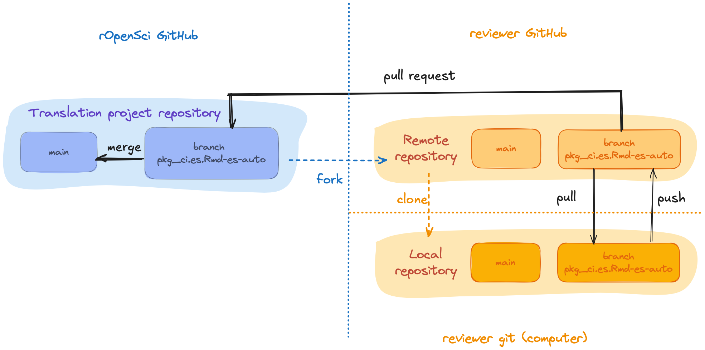
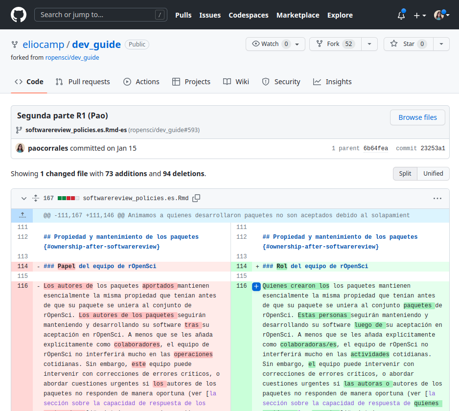
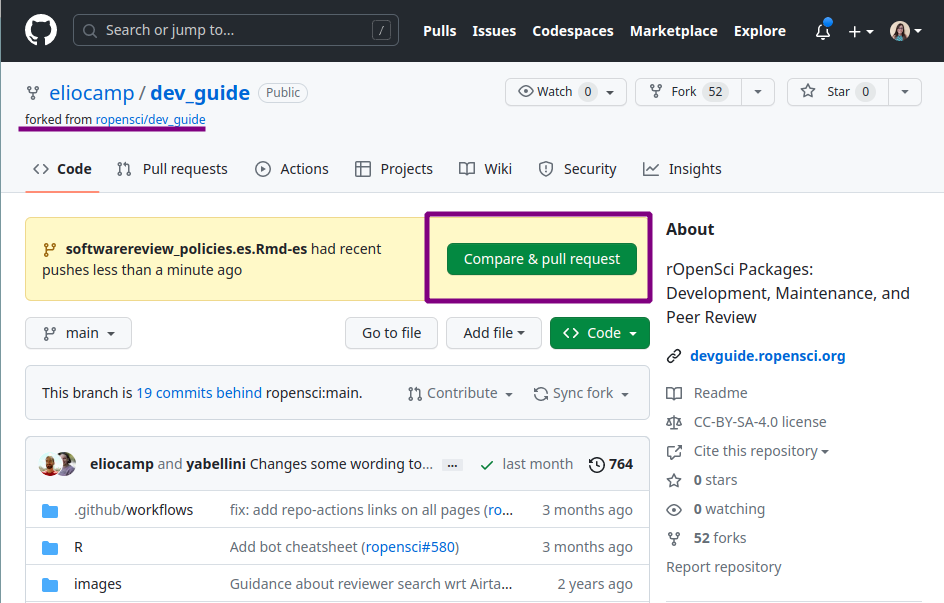

3  Translation and Review Guidelines
3.1 Contributing
3.1.1 Contributing to an existing project
If you’re interested in contributing to an existing translation project, you’ll need to
- get in touch with the people maintaining the project,
- familiarize yourself with the source material to be translated, and
- read this guide, paying close attention to the language-specific guidelines
You can contact a project maintainer to express your interest through email, Slack, or GitHub. On the list of active projects, you will find information on each project, including the maintainer. Each translation project also has a channel on the rOpenSci Slack where translation decisions are discussed and made, which are reflected in the language-specific guidelines in this guide and a glossary. If you join a translations project, we will make sure you get an invitation to the Slack channel.
It’s a good idea to ask how review tasks are being divided so that everyone knows what they are responsible for.
Do not hesitate to ask any questions you may have, such as general questions like “What is the expected time commitment?”, or technical questions like “What do I do if I run into problems on GitHub?”
3.1.2 Proposing a new translation project
Starting a new translation project requires work and a commitment to the process, but can be a really rewarding experience!
Because multiple reviewers are required for all translations and there must be at least one active project maintainer, we recommend that those interested in starting a new translation project invite their local community to participate and form an initial team before starting the process.
If the language you are interested in translating does not have an active project, please contact the rOpenSci team to propose it. You can send an email to info@ropensci.org or open an issue in this repository.
Please note that starting a new project requires a commitment to manage the repository where all the reviews will take place. We ask that those proposing a new translation project commit to maintaining it for at least 2 years, or to finding a new maintainer if they must give it up within 2 years. This is the same commitment we ask of our package maintainers.
3.2 Technical aspects
3.2.1 General Guidelines
In each step of this process, we use the following guidelines:
Use a conversational voice rather than a formal or academic voice.
If appropriate, specify the dialect or regional language variation used. For example, the Spanish translation uses Latin American conventions.
Try to be gender-neutral. If the language you are working on has a strong grammatical gender, the translation adjusts wording to avoid assigning a gender. Where a gender mark cannot be avoided, follow the specific language agreement in the use of inclusive language or non-sexist language.
Try to be idiomatic. Don’t worry about literal translations. Bring the message closer to your audience[^intro-yani] by choosing the text and form in the target language that best expresses the meaning of the fragment from the original.
Take breaks when reviewing. When we work for a long time on a text, it is difficult to identify typing errors. As a suggestion, once you finish the revision of the chapter or section, let some time pass (a few hours or a day) before doing the final reading and sending it for the next review. This makes it easier for this type of detail to jump out and allows those who do the review to focus on the quality of the translation rather than on orthotypographic corrections. It is also useful to review the text in a formatted version (compiled as pdf or html), since some errors will be more visible than in the raw version. If you have the possibility, a printout on paper, both of the raw version and the compiled version, also helps to see the errors more clearly.
3.2.2 Organization
In this section we will use the rOpenSci Packages: Development, Maintenance, and Peer Review guide as an example, but all technical aspects apply to all other rOpenSci translations.
The source code that generates this material to be translated lives at github.com/ropensci/dev_guide, and is organized in .Rmd (R Markdown) files that contain text and sometimes also code. In this case there are also some configuration files that need to be translated so that the workflow for creating the guide in the new language is fully translated.
Each chapter has one .Rmd file per language, with a suffix that identifies the language using its two-letter code (according to ISO 639-1). For example, the chapter “Software Peer Review Policies” will have its original English version in softwarereview_policies.Rmd and its translated Spanish version in softwarereview_policies.es.Rmd.
If the translation project is in progress, you will find a series of pull requests, one for each file to translate, generated with the babeldown package, containing the automatically translated text. Each of these pull requests has an associated branch. For example, translations of the pkg_ci.Rmd file to Spanish would be found in the PR merging the pkg_ci.es.Rmd-es-auto branch, and called “Add Spanish automatic translation pkg_ci.es.Rmd”.
In fact, if there are several translation projects going on at the same, you may encounter many pull requests for different files and different languages. We recommend that you filter the pull requests using the tag for your language, for example the tag for Spanish translation is ‚Äútraducci√≥n üßâ‚Äù. You can also check the status of each pull request on the GitHub project board of each active language.
For security and organization, reviewers do not have write permission in the main repository. The project maintainer will make a fork (we call this the working repository) and will give write permission to this fork to all the project contributors. This fork will have the same branches as the main repository; this is key since the review of each file will be done on the branch associated to its translation. This means that a review of the Portuguese translation would happen on the pkg_ci.pt.Rmd-pt-auto branch, whereas the review of the Spanish translation would happen on the pkg_ci.es.Rmd-es-auto branch.

Once you’ve contacted the project maintainer and you’re ready to start contributing, the first thing you should do is to clone the working repository. Once cloned, you can start working with the repository locally on your computer. If you haven’t already had a discussion about what you will be reviewing, you can ask in the Slack channel or comment on a pull request to ask if you can take the review of that chapter. We strongly suggest that you ask before starting work on your review.
Now let’s start a review!
3.2.3 Review 1
The purpose of this first review is to make a detailed reading of the machine translation in order to:
Ensure that the meaning of the sentence or paragraph is maintained.
Check that the glossary terms agreed upon by the community have been used according to the context.
Apply stylistic decisions whenever possible. For example, in Spanish we decided to avoid gender marking of nouns and adjectives by paraphrasing sentences or using “las/los” if paraphrasing is not possible.
Check that code blocks or Markdown markup have not been affected.
Translate variable names and comments visible in the code blocks whenever appropriate.
Often there will still some questions and it is possible that some things may be overlooked. Style decisions are often the most difficult to implement and sometimes it is necessary to consult with the rest of the team or discuss it later with the second reviewer.
Working locally on your computer, here are the steps to follow when performing a first review of a file:
Check out the branch associated with the file you are going to review. For example, if you are reviewing
softwarereview_policies.en.Rmd, the branch would besoftwarereview_policies.es.Rmd-es.Open the file. For example,
softwarereview_policies.es.Rmd. You may see things to improve immediately, as the automatic translation does a good but imperfect job.-
Start reviewing the text. For this we suggest you have the English version next to you as you may need to go back to the original version to understand the context of some phrase or word that the translator has not been able to translate correctly. You can use the web version of the material you are translating or the “Files changed” tab of the PR in the main repository.

Commit your changes. Many times the content of the files will be extensive and you will need a lot of time to complete the revision. In these cases we suggest you make periodic commits at least after each work session indicating in the commit message which line of the file you have reached. This way, if you need to delegate the review to someone else, that person can review the file history and pick up where you left off.
Push to the working repository. So far the review only lives in your local repository, pushing it moves it online. It is very important that you push to the branch associated to the file you are working on, otherwise we will not be able to connect your review with the original translation.
Notify the project maintainer or the second reviewer. Once you have completed your review, notify the project coordinator or the person assigned to review 2, if there is one.
3.2.4 Review 2
You’re going to do the second review, great!
Whoever did the first review, whom we will call R1 for now. most likely generated one or more commits with changes over the original translation. This means that your work does not start from scratch. This second review seeks builds upon the first to generate a text that maintains the original content but also sounds natural in the new language.
In order to achieve this, the following must be taken into account:
Use terms according to the glossary and the specific context.
Use the format defined by the community, for example, in the Spanish translation, use italicized format for words that remain in English.
Apply style decisions missed by the first reviewer. For example, in Spanish try to replace any “las/los” with a phrase without gender marking.
Check that sentences are generally understandable and sound good while avoiding literal translations.
In the process of performing the second review you may need to consult with the first reviewer about the decisions they made or with the rest of the community if there is a phrase or term that raises doubts. You may then suggest adding new terms to the glossary or updating this translation guide.
Working locally on your computer, here are the steps to follow when performing a second review of a file:
Checkout the branch associated to the file you are going to check.** For example, if you’re helping to translate
softwarereview_policies.en.Rmd, you would look for thesoftwarereview_policies.es.Rmd-esbranch.Pull the changes. Do a pull to download all the changes the first reviewer made to update your local copy.
-
Start reviewing the text. To do this, we suggest you open the file history to view the changes the first reviewer made. This will allow you to know if a phrase or word comes from the machine translation or from another human being.

Commit your changes. Many times the content of the files will be extensive and you will need a lot of time to complete the revision. In these cases we suggest you make periodic commits at least after each work session indicating in the commit message which line of the file you have reached. This way, if you need to delegate the review to someone else, that person can review the file history and pick up where you left off.
Push to the working repository. So far the review only lives in your local repository, pushing it moves it online. It is very important that you push to the branch associated to the file you are working on, otherwise we will not be able to connect your review with the original translation.
Open a pull request Once you have completed your revision, the chapter is ready! However, this new version only lives in the working repository. You will have to open a pull request in the main repository to have it reviewed and approved by someone in an editor role. In the next section we will see how to open the pull request.
3.2.5 Pull Request and final edits
Once the review process is complete, it is time to transfer the revised translation from the working repository to the main rOpenSci repository. For this, the second reviewer will have to open a pull request that compares the revised version with the original machine translation version.
-
Check your repository and branch. Make sure that all changes are in the working repository and that you are working on the branch associated to the file under review, for example
softwarereview_policies.es.Rmd-es.
If you are on the correct branch, in the GitHub web interface you will see the following:

GitHub will detect new changes (pushes) in the branch and will suggest comparing them and making a pull request to the main repository.
- Click on the “Compare & pull request” button.
-
Edit the pull request. You will then have the option to modify the title of the pull request and leave a message. We suggest 2 things:
Change the title to identify that it is a “Review”. It is important to differentiate it from the pull request of the automatic translation.
In the body of the message, tag (use
@github-name) the maintainer of the translation project so that they are aware of the progress and can then continue with the process.

Double check the branch. Before creating the pull request it is very important that you check that it is done from the correct branch. This is the only way to connect the review work with the automatic translation and to be able to unify the versions correctly.
Create the pull request. And that’s it! Click on “Create pull request”.
From this point on, the review is in the hands of the maintainer of the translation project. This person must review the pull request and make queries to first and second reviewers before merging the *pull requests.
3.3 General review
The review process is a collaborative process in which, we hope, many people will participate. This has the great advantage of incorporating different perspectives on the use of language and generating a translation that represents the greatest number of people. However, with many contributors, and despite the specific guidance of each language, it is possible that sometimes different criteria may be used or that there are simply typing errors.
For all these reasons, it is important that the translation project is completed with an overall review of the material. We strongly suggest that this be carried out by one person in order to maintain consistency throughout the text.
Now the translation is ready and rOpenSci staff will take it from here to ensure it is included along side the original material.
Thank you and congratulations!